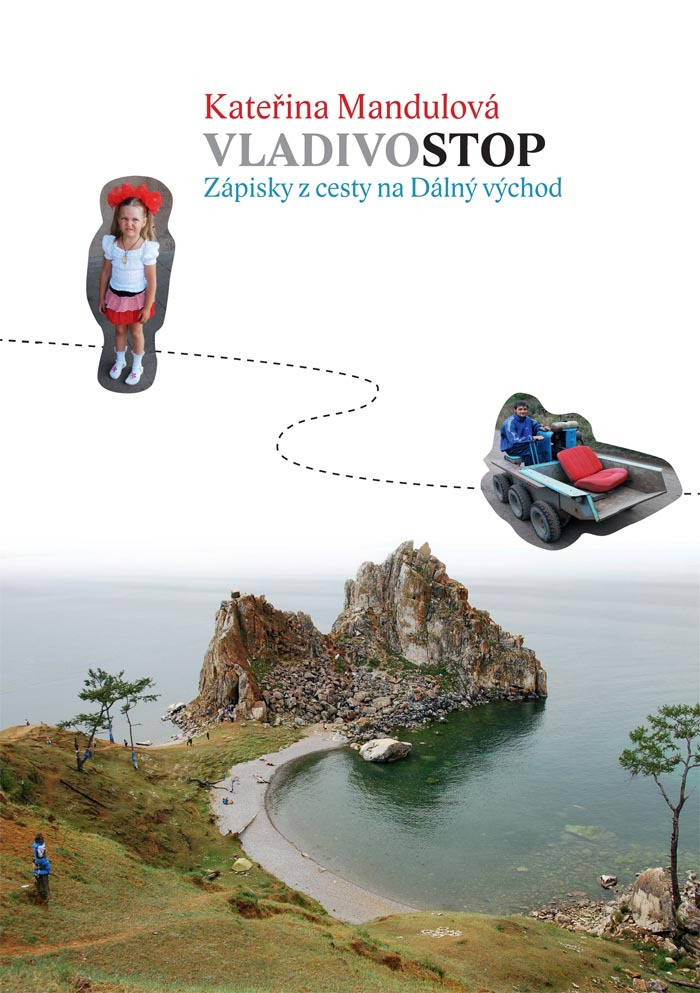

<!DOCTYPE html>
<html></html>

    <!--[if lt IE 7 ]> <html class="ie6"> <![endif]-->
    <!--[if IE 7 ]>    <html class="ie7"> <![endif]-->
    <!--[if IE 8 ]>    <html class="ie8"> <![endif]-->
    <!--[if IE 9 ]>    <html class="ie9"> <![endif]-->
    <!--[if (gt IE 9)|!(IE)]><!--> <html class=""> <!--<![endif]-->

    <head>
        <meta http-equiv="Content-Type" content="text/html; charset=utf-8" />
        <meta name="keywords" content="Vladivostop, Vladivostok ">
        <meta name="author" content="Kateřina Mandulová">
        <meta name="description" content="Cesta na Sibiř a ještě dál...">
        <link type="text/css" rel="stylesheet" href="bootstrap-3.1.1-dist/css//bootstrap.min.css" />
        <link type="text/css" rel="stylesheet" href="book.css" />
        <link type="text/css" rel="stylesheet" href="stylesheet.css" />
        <link rel="icon" href="images/favicon.ico" />
        <script type="text/javascript" src="jquery-1.9.1.js"> </script>
        <script type="text/javascript" src="video.js"></script>
        <script type="text/javascript" src="script.js"></script>
        <title>Vladivostop</title>
        <style>
        
            @import url(http://fonts.googleapis.com/css?family=Roboto:400,900italic,900,700,700italic,500italic,400italic,500&subset=latin,latin-ext);
/* CSS Document */
* {
	font-family: Roboto Verdana, Geneva, sans-serif;
	
} /*setting up initial fonts*/
        </style>
    </head>

    <body> <!-- Start Body-->

        <div id="videopg">
            <video id="video" width="100%" height="100%" >
                <source src="video/stoparka_1_0.mp4" type="video/mp4" />
                <source src="video/stoparka_1_0.webm" type="video/webm" />

            </video>
        </div> <!-- video -->


        <div class="navbar navbar-default navbar-static-top" role="navigation">
            <div class="container">
                <div class="navbar-header">
                    <button type="button" class="navbar-toggle" data-toggle="collapse" data-target=".navbar-collapse">
                        <span class="sr-only">Toggle navigation</span>
                        <span class="icon-bar"></span>
                        <span class="icon-bar"></span>
                        <span class="icon-bar"></span>
                    </button>
                    <a class="navbar-brand" href="index.html?v=old">Menu</a>
                </div>
                <div class="navbar-collapse collapse">
                    <ul class="nav navbar-nav">
                        <li class="active"><a href="index.html?v=old">Home <span class="glyphicon glyphicon-home"></span></a></li>
                        <li class="dropdown">
                            <a href="#" class="dropdown-toggle" data-toggle="dropdown">Kniha <span class="glyphicon glyphicon-book"></span></a>
                            <ul class="dropdown-menu">
                                <li><a href="#">Obsah <span class="glyphicon glyphicon-list"></span></a></li>
                                <li><a href="#">Ukázka <span class="glyphicon glyphicon-bookmark"></span></a></li>
                                <li><a href="mapa.html">Mapa <span class="glyphicon glyphicon-map-marker"></span></a></li>
                                <li class="divider"></li>
                                <li><a href="partneri.html">Partneři <span class="glyphicon glyphicon-certificate"></span></a></li>
                                <li><a href="#">Koupit <span class="glyphicon glyphicon-shopping-cart"></span></a></li>
                            </ul>
                        </li>
                        <li class="dropdown">
                            <a href="#" class="dropdown-toggle" data-toggle="dropdown">Profil <span class="glyphicon glyphicon-user"></span></a>
                            <ul class="dropdown-menu">
                                <li><a href="#">Autorka <span class="glyphicon glyphicon-question-sign"></span></a></li>
                                <li><a href="#">Rozhovor <span class="glyphicon glyphicon-bullhorn"></span></a></li>
                                <li><a href="#">Články <span class="glyphicon glyphicon-align-justify"></span></a></li>
                            </ul>
                        </li>
                        <li class="dropdown">
                            <a href="#" class="dropdown-toggle" data-toggle="dropdown">Galerie <span class="glyphicon glyphicon-picture"></span></a>
                            <ul class="dropdown-menu">
                                <li><a href="#">Fotky <span class="glyphicon glyphicon-camera"></span></a></li>
                                <li><a href="#">Plakáty <span class="glyphicon glyphicon-file"></span></a></li>
                            </ul>
                        </li>
                        <li class="dropdown">
                            <a href="#" class="dropdown-toggle" data-toggle="dropdown">Promítání <span class="glyphicon glyphicon-calendar"></span></a>
                            <ul class="dropdown-menu">
                                <li><a href="#">Historie <span class="glyphicon glyphicon-header"></span></a></li>
                                <li><a href="#">Příští <span class="glyphicon glyphicon-paperclip"></span></a></li>
                            </ul>
                        </li>
                        <li class="dropdown">
                            <a href="#" class="dropdown-toggle" data-toggle="dropdown">Kontakt <span class="glyphicon glyphicon-earphone"></span></a>
                            <ul class="dropdown-menu">
                                <li><a href="#">E-mail <span class="glyphicon glyphicon-envelope"></span></a></li>
                                <li><a href="#">Koupit knihu <span class="glyphicon glyphicon-shopping-cart"></span></a></li>
                                <li><a href="#">Jiné <span class="glyphicon glyphicon-globe"></span></a></li>
                                <li class="divider"></li>
                                <li><a href="#">Fun club </a></li>
                            </ul>
                        </li>
                    </li>
                </ul>
            </div><!--/.nav-collapse -->
        </div>
    </div>

    <div class="title">
        <div class="container">
            <h1><span>VLADIVO</span>STOP</h1>
            <h2>Kateřina Mandulová</h2>
        </div>
    </div>
    <div id="small_social" class="container visible-sm visible-xs">
        <div class="row">
            <div id="fb_small" class="col-xs-3 small_social_box"><a href="https://www.facebook.com/katerina.mandulova"><span>Facebook</span></a></div>
            <div id="tw_small" class="col-xs-3 small_social_box"><a hraf="#"><span>Twitter</span></a></div>
            <div id="gp_small" class="col-xs-3 small_social_box"><a hraf="#"><span>Google+</span></a></div>
            <div id="kp_small" class="col-xs-3 small_social_box"><a hraf="#"><span>Koupit</span></a></div>
        </div>
    </div>

    

        <div id="social" class="hidden-xs hidden-sm">
            <div class="social_box" id="fb"><a href="https://www.facebook.com/katerina.mandulova"><span>Facebook</span></a></div>
            <div class="social_box" id="tw"><a href="#"><span>Twitter</span></a></div>
            <div class="social_box" id="gp"><a href="#"><span>Google+</span></a></div>
            <div class="social_box" id="kp"><a href="#"><span>Koupit</span></a></div>
        </div>


        <div id="content">
            <div class="container">
                <p class="lead">Zápisky z cest na Dálný východ</p>
                <div class="row">
                    
                    <p class="col-md-4 text"><strong>Kateřina Mandulová</strong>: právnička a nezávislá cestovatelka. Na cestách ztrávila více než tři roky života. Stopem procestovala Sibiř a Dálný východ, americký divoký západ, 

                                jihoamerické Altiplano i poušť Atakama, tibetskou náhorní plošinu, pákistánský Karakoram, kazašskou step i gruzinsko-turecké pohraničí. Často křižuje Evropu, proto i Vás si 

                                někdy může stopnout na evopských dálnicích.
                    </p>
                    
                    <p class="col-md-4 text">Kateřina vypráví o jízdě autostopem z Třebíče do Vladivostoku. Na cestu se vypravila v létě roku 2009. Cestovala na vlastní pěst s batohem na zádech. Potkala zajímavé lidi, prozkoumala ruská velkoměsta i sibiřskou divočinu a poznala Rusko jiné, než jaké známe z večerních zpráv. </p>

                        
                    <div class="col-md-4 kniha" href="#">
                        <figure class='book'>

                            <!-- Front -->

                            <ul class='hardcover_front'>
                                <li>
                                    <div class="coverDesign">
                                        
                                    </div>
                                </li>
                                <li></li>
                            </ul>

                            <!-- Pages -->

                            <ul class='page'>
                                <li></li>
                                <li class="book_chap_list" style="text-align: center">
                                    <div class="book_chap"><a src="#">Kapitola 1</a></div>
                                    <div class="book_chap"><a src="#">Kapitola 2</a></div>
                                    <div class="book_chap"><a src="#">Kapitola 3</a></div>
                                    <div class="book_chap"><a src="#">Kapitola 4</a></div>
                                    <div class="book_chap"><a src="#">Kapitola 5</a></div>
                                    <div class="book_chap"><a src="#">Kapitola 6</a></div>
                                </li>
                                <li></li>
                                <li></li>
                                <li></li>
                            </ul>

                            <!-- Back -->

                            <ul class='hardcover_back'>
                                <li></li>
                                <li></li>
                            </ul>
                            <ul class='book_spine'>
                                <li></li>
                                <li></li>
                            </ul>


                        </figure>
                    </div>
                </div>
            </div>
        </div><!-- end content-->

   


    <div class="footer">
        <div class="container">
            <div class="row">
            </div>
        </div>
    </div><!-- end of footer-->
    <script src="https://ajax.googleapis.com/ajax/libs/jquery/1.11.0/jquery.min.js"></script>
    <script src="bootstrap-3.1.1-dist/js/bootstrap.min.js"></script>
    </body>
</html>
